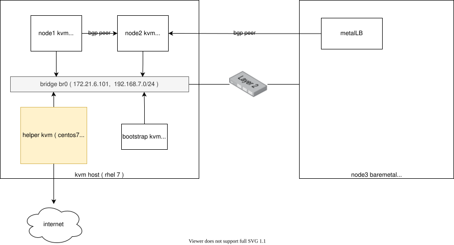

MetalLB BGP mode on openshift 4.8
openshift对外提供服务，默认是router的方式，里面是一个haproxy，但是默认只是支持http/https，定制一下，可以支持tcp。这种配置方法不是很直观，特别是tcp的支持也很鸡肋。我们希望的方式，是k8s service直接暴露一个对外服务ip，并且通过bgp广播出去。今天，我们就看看metalLB项目如何帮助我们达到这个目的。
本次实验部署架构图：

视频讲解:
安装 MetalLB
安装MetalLB非常简单
https://metallb.universe.tf/installation/clouds/#metallb-on-openshift-ocp
mkdir -p /data/install/metallb
cd /data/install/metallb
wget https://raw.githubusercontent.com/metallb/metallb/v0.10.2/manifests/namespace.yaml
wget https://raw.githubusercontent.com/metallb/metallb/v0.10.2/manifests/metallb.yaml
sed -i '/runAsUser: 65534/d' ./metallb.yaml
oc create -f namespace.yaml
oc adm policy add-scc-to-user privileged -n metallb-system -z speaker
oc create -f metallb.yaml创建路由器
我们用一个 kvm 来模拟 bgp 路由器
- https://access.redhat.com/documentation/en-us/red_hat_enterprise_linux/8/html/configuring_and_managing_networking/setting-your-routing-protocols_configuring-and-managing-networking#intro-to-frr_setting-your-routing-protocols
- https://www.cisco.com/c/en/us/td/docs/ios-xml/ios/iproute_bgp/configuration/xe-16/irg-xe-16-book/bgp-dynamic-neighbors.html
- https://ipbgp.com/2018/02/07/quagga/
- https://docs.frrouting.org/en/latest/bgp.html
# to setup a router vm for testing
# go to kvm host
cd /data/kvm
wget https://raw.githubusercontent.com/wangzheng422/docker_env/dev/redhat/ocp4/4.8/scripts/helper-ks-rocky.cfg
sed -i '0,/^network.*/s/^network.*/network --bootproto=static --device=enp1s0 --gateway=172.21.6.254 --ip=172.21.6.10 --netmask=255.255.255.0 --nameserver=172.21.1.1 --ipv6=auto --activate/' helper-ks-rocky.cfg
sed -i '0,/^network --hostname.*/s/^network --hostname.*/network --hostname=bgp-router/' helper-ks-rocky.cfg
virt-install --name="bgp-router" --vcpus=2 --ram=2048 \
--cpu=host-model \
--disk path=/data/nvme/bgp-router.qcow2,bus=virtio,size=30 \
--os-variant rhel8.4 --network bridge=baremetal,model=virtio \
--graphics vnc,port=49000 \
--boot menu=on --location /data/kvm/Rocky-8.4-x86_64-minimal.iso \
--initrd-inject helper-ks-rocky.cfg --extra-args "inst.ks=file:/helper-ks-rocky.cfg"
# in the bgp-router vm
nmcli con mod enp1s0 +ipv4.addresses "192.168.7.10/24"
nmcli con up enp1s0
systemctl disable --now firewalld
dnf install -y frr
sed -i 's/bgpd=no/bgpd=yes/g' /etc/frr/daemons
systemctl enable --now frr
# 进入路由器配置界面
vtysh
# 以下是 bgp 路由器配置
router bgp 64512
neighbor metallb peer-group
neighbor metallb remote-as 64512
bgp listen limit 200
bgp listen range 192.168.7.0/24 peer-group metallb配置 MetalLB 和 bgp-router 进行配对
# on helper
cat << EOF > /data/install/metal-bgp.yaml
apiVersion: v1
kind: ConfigMap
metadata:
namespace: metallb-system
name: config
data:
config: |
peers:
- my-asn: 64512
peer-asn: 64512
peer-address: 192.168.7.10
address-pools:
- name: my-ip-space
protocol: bgp
avoid-buggy-ips: true
addresses:
- 198.51.100.0/24
EOF
oc create -f /data/install/metal-bgp.yaml
# to restore
oc delete -f /data/install/metal-bgp.yaml回到 bgp-router 看看路由情况
# back to bgp-router vm
vtysh
bgp-router# show ip bgp summary
IPv4 Unicast Summary:
BGP router identifier 192.168.7.10, local AS number 64512 vrf-id 0
BGP table version 0
RIB entries 0, using 0 bytes of memory
Peers 2, using 43 KiB of memory
Peer groups 1, using 64 bytes of memory
Neighbor V AS MsgRcvd MsgSent TblVer InQ OutQ Up/Down State/PfxRcd PfxSnt
*192.168.7.13 4 64512 2 2 0 0 0 00:00:25 0 0
*192.168.7.16 4 64512 2 2 0 0 0 00:00:25 0 0
Total number of neighbors 2
* - dynamic neighbor
2 dynamic neighbor(s), limit 200我们看到，集群里面的2个node，分别和路由器建立的peer关系。
创建测试应用
# back to helper vm
cat << EOF > /data/install/demo.yaml
---
apiVersion: v1
kind: Pod
metadata:
name: test-0
labels:
env: test
spec:
restartPolicy: OnFailure
nodeSelector:
kubernetes.io/hostname: 'master-0'
containers:
- name: php
image: "quay.io/wangzheng422/php:demo.02"
---
apiVersion: v1
kind: Pod
metadata:
name: test-1
labels:
env: test
spec:
restartPolicy: OnFailure
nodeSelector:
kubernetes.io/hostname: 'worker-0'
containers:
- name: php
image: "quay.io/wangzheng422/php:demo.02"
---
kind: Service
apiVersion: v1
metadata:
name: demo
spec:
type: LoadBalancer
ports:
- name: "http"
protocol: TCP
port: 80
targetPort: 80
selector:
env: test
EOF
oc create -f /data/install/demo.yaml
# to restore
oc delete -f /data/install/demo.yaml
oc get all
# NAME READY STATUS RESTARTS AGE
# pod/mypod-787d79b456-4f4xr 1/1 Running 3 3d23h
# pod/test-0 1/1 Running 0 2m28s
# pod/test-1 1/1 Running 0 2m28s
# NAME TYPE CLUSTER-IP EXTERNAL-IP PORT(S) AGE
# service/demo LoadBalancer 172.30.82.87 198.51.100.1 80:32203/TCP 2m28s
# service/kubernetes ClusterIP 172.30.0.1 <none> 443/TCP 4d22h
# service/openshift ExternalName <none> kubernetes.default.svc.cluster.local <none> 4d22h
# NAME READY UP-TO-DATE AVAILABLE AGE
# deployment.apps/mypod 1/1 1 1 3d23h
# NAME DESIRED CURRENT READY AGE
# replicaset.apps/mypod-787d79b456 1 1 1 3d23h
oc get pod -o wide
# NAME READY STATUS RESTARTS AGE IP NODE NOMINATED NODE READINESS GATES
# mypod-787d79b456-4f4xr 1/1 Running 3 4d 10.254.1.2 worker-0 <none> <none>
# test-0 1/1 Running 0 8m38s 10.254.0.66 master-0 <none> <none>
# test-1 1/1 Running 0 8m38s 10.254.1.230 worker-0 <none> <none>
oc get svc/demo -o yaml
# apiVersion: v1
# kind: Service
# metadata:
# creationTimestamp: "2021-08-30T12:42:21Z"
# name: demo
# namespace: default
# resourceVersion: "2046159"
# uid: 1af07435-5234-4062-994d-4715453118c6
# spec:
# clusterIP: 172.30.82.87
# clusterIPs:
# - 172.30.82.87
# externalTrafficPolicy: Cluster
# ipFamilies:
# - IPv4
# ipFamilyPolicy: SingleStack
# ports:
# - name: http
# nodePort: 32203
# port: 80
# protocol: TCP
# targetPort: 80
# selector:
# env: test
# sessionAffinity: None
# type: LoadBalancer
# status:
# loadBalancer:
# ingress:
# - ip: 198.51.100.1回到 bgp-router 看看路由更新情况
# back to bgp-router
bgp-router# show ip bgp summary
IPv4 Unicast Summary:
BGP router identifier 192.168.7.10, local AS number 64512 vrf-id 0
BGP table version 1
RIB entries 1, using 192 bytes of memory
Peers 2, using 43 KiB of memory
Peer groups 1, using 64 bytes of memory
Neighbor V AS MsgRcvd MsgSent TblVer InQ OutQ Up/Down State/PfxRcd PfxSnt
*192.168.7.13 4 64512 73 72 0 0 0 00:35:16 1 0
*192.168.7.16 4 64512 73 72 0 0 0 00:35:16 1 0
Total number of neighbors 2
* - dynamic neighbor
2 dynamic neighbor(s), limit 200
bgp-router# show ip bgp neighbors 192.168.7.13 routes
BGP table version is 1, local router ID is 192.168.7.10, vrf id 0
Default local pref 100, local AS 64512
Status codes: s suppressed, d damped, h history, * valid, > best, = multipath,
i internal, r RIB-failure, S Stale, R Removed
Nexthop codes: @NNN nexthop's vrf id, < announce-nh-self
Origin codes: i - IGP, e - EGP, ? - incomplete
Network Next Hop Metric LocPrf Weight Path
*>i198.51.100.1/32 192.168.7.13 0 0 ?
Displayed 1 routes and 2 total paths
bgp-router#
bgp-router# show ip bgp neighbors 192.168.7.16 routes
BGP table version is 1, local router ID is 192.168.7.10, vrf id 0
Default local pref 100, local AS 64512
Status codes: s suppressed, d damped, h history, * valid, > best, = multipath,
i internal, r RIB-failure, S Stale, R Removed
Nexthop codes: @NNN nexthop's vrf id, < announce-nh-self
Origin codes: i - IGP, e - EGP, ? - incomplete
Network Next Hop Metric LocPrf Weight Path
*=i198.51.100.1/32 192.168.7.16 0 0 ?
Displayed 1 routes and 2 total paths在路由器的shell界面上看看
ip r
# default via 172.21.6.254 dev enp1s0 proto static metric 100
# 172.21.6.0/24 dev enp1s0 proto kernel scope link src 172.21.6.10 metric 100
# 192.168.7.0/24 dev enp1s0 proto kernel scope link src 192.168.7.10 metric 100
# 198.51.100.1 proto bgp metric 20
# nexthop via 192.168.7.13 dev enp1s0 weight 1
# nexthop via 192.168.7.16 dev enp1s0 weight 1
[root@bgp-router ~]# curl 198.51.100.1 && echo
Hello!<br>Welcome to RedHat Developer<br>Enjoy all of the ad-free articles<br>10.254.0.66
[root@bgp-router ~]# curl 198.51.100.1 && echo
Hello!<br>Welcome to RedHat Developer<br>Enjoy all of the ad-free articles<br>10.254.0.66
[root@bgp-router ~]# curl 198.51.100.1 && echo
Hello!<br>Welcome to RedHat Developer<br>Enjoy all of the ad-free articles<br>10.254.0.66
[root@bgp-router ~]# curl 198.51.100.1 && echo
Hello!<br>Welcome to RedHat Developer<br>Enjoy all of the ad-free articles<br>10.254.0.66
[root@bgp-router ~]# curl 198.51.100.1 && echo
Hello!<br>Welcome to RedHat Developer<br>Enjoy all of the ad-free articles<br>10.254.1.230
[root@bgp-router ~]# curl 198.51.100.1 && echo
Hello!<br>Welcome to RedHat Developer<br>Enjoy all of the ad-free articles<br>10.254.0.66
[root@bgp-router ~]# curl 198.51.100.1 && echo
Hello!<br>Welcome to RedHat Developer<br>Enjoy all of the ad-free articles<br>10.254.0.66
[root@bgp-router ~]# curl 198.51.100.1 && echo
Hello!<br>Welcome to RedHat Developer<br>Enjoy all of the ad-free articles<br>10.254.0.66
[root@bgp-router ~]# curl 198.51.100.1 && echo
Hello!<br>Welcome to RedHat Developer<br>Enjoy all of the ad-free articles<br>10.254.1.230
[root@bgp-router ~]# curl 198.51.100.1 && echo
Hello!<br>Welcome to RedHat Developer<br>Enjoy all of the ad-free articles<br>10.254.0.66到worker-0上，看看 nft 规则
# go to worker-0 to analyze the nat rules
nft list ruleset | grep 198.51
# meta l4proto tcp ip daddr 198.51.100.1 tcp dport 80 counter packets 0 bytes 0 jump KUBE-FW-CTBMGJDNUDRWEDVR
nft list ruleset | grep KUBE-FW-CTBMGJDNUDRWEDVR -A 5
# meta l4proto tcp ip daddr 198.51.100.1 tcp dport 80 counter packets 0 bytes 0 jump KUBE-FW-CTBMGJDNUDRWEDVR
# meta l4proto tcp @nh,96,16 != 2814 ip daddr 172.30.145.124 tcp dport 443 counter packets 0 bytes 0 jump KUBE-MARK-MASQ
# meta l4proto tcp ip daddr 172.30.145.124 tcp dport 443 counter packets 0 bytes 0 jump KUBE-SVC-L54HVQEJKTL2PXFK
# meta l4proto tcp @nh,96,16 != 2814 ip daddr 172.30.16.253 tcp dport 8443 counter packets 0 bytes 0 jump KUBE-MARK-MASQ
# meta l4proto tcp ip daddr 172.30.16.253 tcp dport 8443 counter packets 0 bytes 0 jump KUBE-SVC-YVQ2VVJT4ABSS56R
# meta l4proto tcp @nh,96,16 != 2814 ip daddr 172.30.185.119 tcp dport 9091 counter packets 0 bytes 0 jump KUBE-MARK-MASQ
# --
# chain KUBE-FW-CTBMGJDNUDRWEDVR {
# counter packets 0 bytes 0 jump KUBE-MARK-MASQ
# counter packets 0 bytes 0 jump KUBE-SVC-CTBMGJDNUDRWEDVR
# counter packets 0 bytes 0 jump KUBE-MARK-DROP
# }
nft list ruleset | grep KUBE-SVC-CTBMGJDNUDRWEDVR -A 3
# meta l4proto tcp ip daddr 172.30.82.87 tcp dport 80 counter packets 0 bytes 0 jump KUBE-SVC-CTBMGJDNUDRWEDVR
# meta l4proto tcp ip daddr 198.51.100.1 tcp dport 80 counter packets 11 bytes 660 jump KUBE-FW-CTBMGJDNUDRWEDVR
# meta l4proto tcp @nh,96,16 != 2814 ip daddr 172.30.145.124 tcp dport 443 counter packets 0 bytes 0 jump KUBE-MARK-MASQ
# meta l4proto tcp ip daddr 172.30.145.124 tcp dport 443 counter packets 0 bytes 0 jump KUBE-SVC-L54HVQEJKTL2PXFK
# --
# meta l4proto tcp tcp dport 32203 counter packets 0 bytes 0 jump KUBE-SVC-CTBMGJDNUDRWEDVR
# }
# chain KUBE-SVC-DCLNKYLNAMROIJRV {
# --
# chain KUBE-SVC-CTBMGJDNUDRWEDVR {
# counter packets 9 bytes 540 jump KUBE-SEP-BKD3LMWAJNKW5GNU
# counter packets 2 bytes 120 jump KUBE-SEP-M5WVBCWAFJ2J2M2U
# }
# --
# counter packets 11 bytes 660 jump KUBE-SVC-CTBMGJDNUDRWEDVR
# counter packets 0 bytes 0 jump KUBE-MARK-DROP
# }
nft list ruleset | grep KUBE-SEP-BKD3LMWAJNKW5GNU -A 3
# counter packets 9 bytes 540 jump KUBE-SEP-BKD3LMWAJNKW5GNU
# counter packets 2 bytes 120 jump KUBE-SEP-M5WVBCWAFJ2J2M2U
# }
# --
# chain KUBE-SEP-BKD3LMWAJNKW5GNU {
# ip saddr 10.254.0.66 counter packets 0 bytes 0 jump KUBE-MARK-MASQ
# meta l4proto tcp counter packets 9 bytes 540 dnat to 10.254.0.66:80
# }
nft list ruleset | grep KUBE-SEP-M5WVBCWAFJ2J2M2U -A 3
# counter packets 2 bytes 120 jump KUBE-SEP-M5WVBCWAFJ2J2M2U
# }
# chain KUBE-FW-CTBMGJDNUDRWEDVR {
# --
# chain KUBE-SEP-M5WVBCWAFJ2J2M2U {
# ip saddr 10.254.1.230 counter packets 0 bytes 0 jump KUBE-MARK-MASQ
# meta l4proto tcp counter packets 2 bytes 120 dnat to 10.254.1.230:80
# }